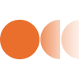

Overview
Explore selected projects
Use categories and tools to filter the work below and quickly find the projects you want to review.

 100 prisoners problem
100 prisoners problem
100 Prisoners Problem
This project explores the classic 100 prisoners problem through a practical, easy to follow simulation. It explains the cycle following strategy, compares it with random guessing, and shows why the mathematically optimal approach reaches about a 31% group success rate. The project was first built as a standalone C++ algorithm simulator, then expanded into a web version to make the concept more intuitive, visual, and accessible.
T-hub
A Community Hub for Collaboration and Events
T-hub is a concept for a platform that connects people, teams, and events in one place. It helps users discover gatherings, share updates, and collaborate around shared interests with a clear, friendly interface.

 .grass
.grass
Mobile App & Website for E-Waste
.grass is a concept project design for a mobile and web platform focused on repairing old and outdated technology, managing electronic waste responsibly, and selling recycled and refurbished devices. It highlights e-waste reduction and encourages a healthier digital balance through clear, accessible user flows.
IncludeMe
A Social App for Real-Life Meetups and Community Activities
IncludeMe is a mobile application that connects users through real-life social interactions such as book clubs, meetups, seminars, or casual walks. The app encourages community building by allowing users to share their plans and invite others to join. Whether it’s a group activity or simply a solo walk someone wants company for, IncludeMe fosters genuine human connection in an increasingly digital world.

 Veo bank
Veo bank
A Digital Banking Experience for Everyday Money
Veo bank is a concept for a clean, approachable banking app that helps users track spending, set savings goals, and manage cards with clarity. The interface focuses on quick insights and frictionless daily actions.